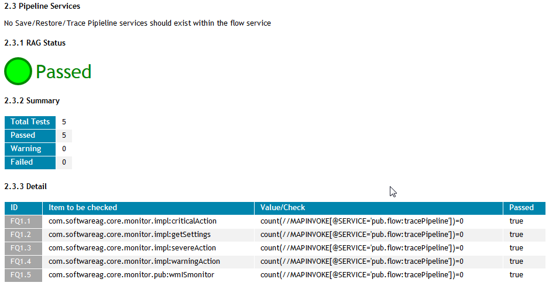
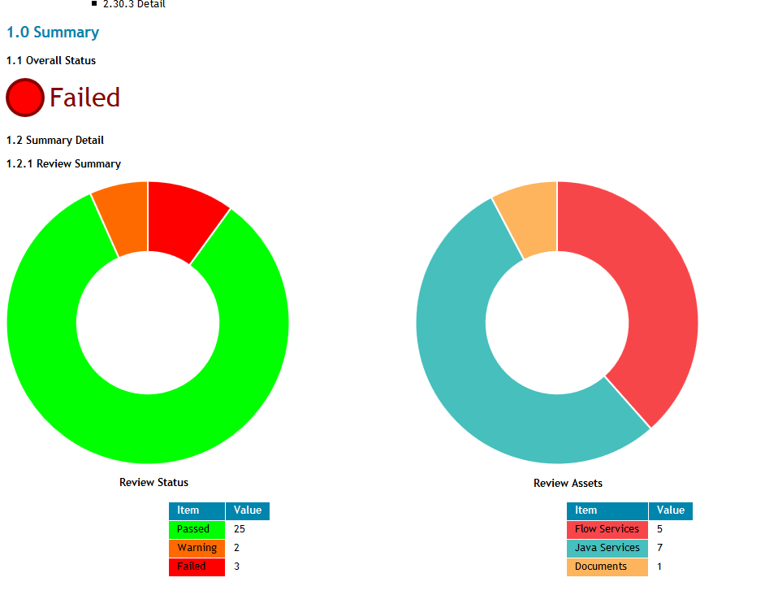
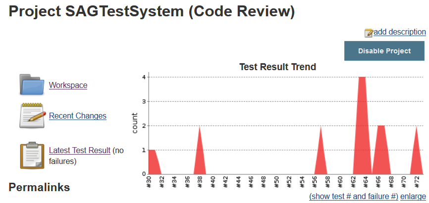

Reports
HTML Report
The generated HTML report contains the full detail of each review item, as well as an overall summary.
e.g.


CSV Report
The CVS report contains the raw data generated from the review presented in CSV format, .e.g
ID NAME SERVICE CHECKID TEST_PASSED VALUE IGNORE_FAILURE RAGSTATUS
1 Stateless com.softwareag.core.monitor.impl:criticalAction SP1.1 TRUE yes FALSE 1
1 Stateless com.softwareag.core.monitor.impl:getSettings SP1.2 TRUE yes FALSE 1
1 Stateless com.softwareag.core.monitor.impl:invokeQuiesce SP1.3 TRUE yes FALSE 1
XML Report
Contains the raw xml, useful if you want to build your own custom HTML repor
An excerpt of an example report is below:
.....
<results>
<Summary>
<total>6</total>
<pass>6</pass>
<fail>0</fail>
<warn>0</warn>
<ragStatus>1</ragStatus>
<executeTime>112</executeTime>
</Summary>
<Report>
<Test passed="true" check-id="SP2.1" ragStatus="1" executeTime="15">
<Service>com.softwareag.testsystem.impl:allowedLocations</Service>
<Type>FLOWSERVICE</Type>
<Value>true</Value>
</Test>
<Test passed="true" check-id="SP2.2" ragStatus="1" executeTime="51">
<Service>com.softwareag.testsystem.impl:callYahoo</Service>
<Type>FLOWSERVICE</Type>
<Value>true</Value>
</Test>
<Test passed="true" check-id="SP2.3" ragStatus="1" executeTime="9">
<Service>com.softwareag.testsystem.pub:isAllowedLocation</Service>
<Type>FLOWSERVICE</Type>
<Value>true</Value>
</Test>
<Test passed="true" check-id="SP2.4" ragStatus="1" executeTime="7">
<Service>com.softwareag.testsystem.pub.isitsunny:_get</Service>
<Type>FLOWSERVICE</Type>
<Value>true</Value>
</Test>
<Test passed="true" check-id="SP2.5" ragStatus="1" executeTime="8">
<Service>com.softwareag.testsystem.pub:isLocationSupported</Service>
<Type>FLOWSERVICE</Type>
<Value>true</Value>
</Test>
<Test passed="true" check-id="SP2.6" ragStatus="1" executeTime="6">
<Service>com.softwareag.testsystem.pub.weather:isItSunny</Service>
<Type>FLOWSERVICE</Type>
<Value>true</Value>
</Test>
</Report>
</results>
.....
<sensors>
<sensor scope="package">
<definition sensorName="totals" sensorClass="com.softwareag.gcs.wm.codereview.sensors.TotalsSensor">
<decorator name="FlowTotals" class="com.softwareag.gcs.wm.codereview.decorators.SummaryTotals"/>
</definition>
<results name="Flow Services" value="6"/>
<results name="Java Services" value="0"/>
<results name="Documents" value="2"/>
<results name="Schemas" value="0"/>
<results name="FF Dictionaries" value="0"/>
<results name="FF Schemas" value="0"/>
<results name="Blaze" value="0"/>
...
JUnit Report
This produces an XML Report constructed in JUnit format in order to be able to publish results to a CI Server 